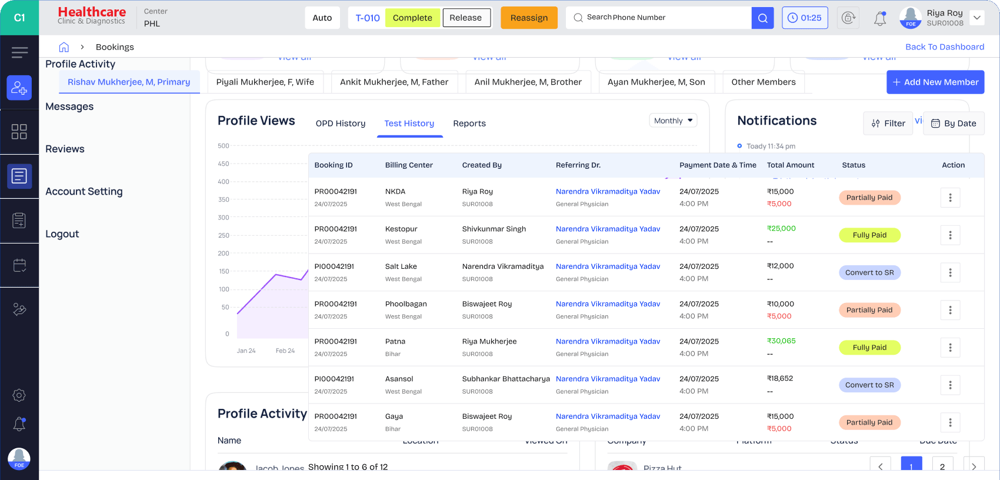
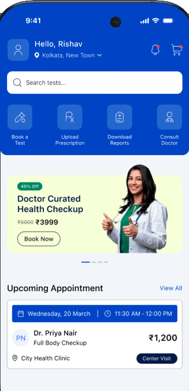

Healthcare · Product design
One connected system for faster, simpler diagnostics.
A diagnostic platform that puts patients, front-desk staff, admins and home-collection teams on one shared record, across five products.


01 — At a glance
The project in thirty seconds.
- 1Problem
- Booking, tracking and reporting a test was split across tools that didn’t talk to each other.
- 2Users
- Patients, front-desk executives, administrators, phlebotomists and home collectors.
- 3Solution
- Five interfaces sharing one record, one status vocabulary and one component set.
- 4Outcome
- Less manual re-entry, and a test patients can follow from booking to report.
02 — The problem
What was getting in the way.
Patients couldn’t see what happened after booking, so they phoned the desk. Internally, the same journey was stitched together by hand across front desk, admin and home collection — which is where the delays and errors came from.
- 01Fragmented information
- 02Manual handoffs between roles
- 03No visibility of a test’s status
03 — Process
How the work ran.
Contextual inquiry with the teams running the service, research across all five roles, and a map of the existing workflow.
Findings documented and the user journey prioritised, so the MVP had a defensible scope rather than a wish list.
Directions explored in low fidelity first, then high-fidelity prototypes once the structure was agreed.
Feasibility tested with the teams who would run it, then release and monitoring.
04 — Insights → decisions
What I learned, and what it changed.
Tap a card to see the design decision.
05 — The solution
The key screens.
Patient app
Booking a test and following it to the report, without phoning anyone.
- Search and quick actions sit above the fold.
- Upcoming appointments are on the home screen, so status needs no navigation.
- Date and slot are one step, sized for one-handed use.
Front desk
Registering a patient and managing their tests from one screen.
- Patient record and booking actions share one view — no context switch.
- A dense table, because scanning beats scrolling in an all-day tool.
Admin
One place to run staff, reports, users and operations.
- Overview metrics lead, so the state of the operation is read first.
- Charts sit beside the records they summarise.
Home collector
Knowing what to collect, where and in what order — in the field.
- Each task carries its own visit details.
- The visit order is given, not worked out by the collector.
- Status updates flow back to the desk and admin.
Website
Finding a test, booking it, and trusting the clinic.
- Test discovery and booking is the primary path.
- Same components and colours as the internal tools, so the brand holds end to end.
06 — Outcome
A unified diagnostic ecosystem.
- 01
One connected system serving all five kinds of user.
- 02
Less manual work, and fewer errors from re-entering data.
- 03
A test patients can follow from booking to report.
- 04
A design system that scales across web and mobile.
What I learned
Reducing complexity isn’t about removing information — it’s about delivering the right information, at the right time, to the right person.
The hardest part was resisting the urge to draw screens before the workflow underneath them was settled.